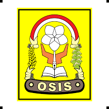

OSIS
aku mengikuti organisasi osis selama 2 tahun.pada tahun 2018 sampai 2020.

Tapak Suci
saat aku masih sma, aku pernah mengikuti organisasi tapak suci selama 12 tahun.itu di mulai saat sd,smp, hingga sma.
Pramuka
aku mengikuti organisasi pramuka selama 2 tahun.pada tahun 2018 sampai 2020.